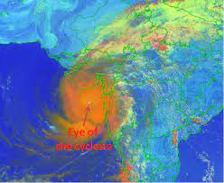

West Coast

Affected regions:
Gujarat, Maharashtra, Kerala
Recent disaster
Name : Tauktae
Date : May 14, 2021
Preparations : All coastal fishing in Kerala was banned by the state's disaster management authority
between May 13–17 in anticipation of rough seas caused by Tauktae's formation and traversal of the offshore
waters. The IMD issued a red alert for nine districts in Kerala for torrential rainfall on May 15, including
Lakshadweep. In Gujarat, 200,000 people were evacuated from low-lying areas all while 54 teams of the National
Disaster Response Force and State Disaster Response Force (SDRF) were deployed.
Damage: 11,774,038 people have been affected, 257,135 evacuated, and over 56,846 houses have been
damaged. 69,429 electric poles and 196 roads have been damaged, as well as more than 40,000 trees. Water supply
system in 5,951 villages were damaged too. RMSI Cyclone Model estimated the loss of ₹15,000 crore (US$1.9
billion) due to the cyclone.
Deaths: In total, 169 people had died in India as a result of Cyclone Tauktae, with at least 80 others
injured and about 81 missing. 10 died in Kerala, 8 in Karnataka, 3 in Goa, 18 in Maharashtra, 64 in Gujarat,
while 66 died from the sinking of Barge P305.